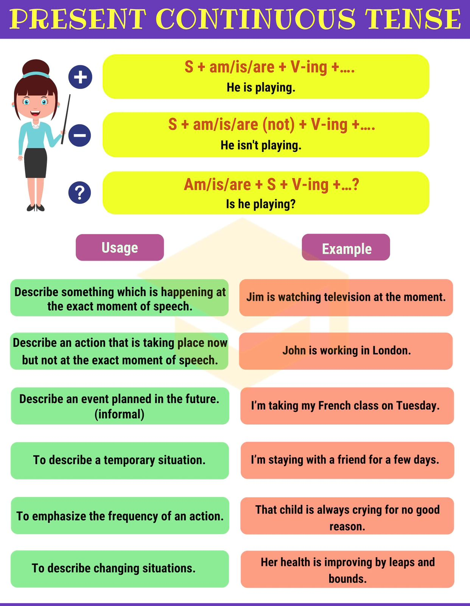

Lesson 3
Present Continuous
Please watch rule

Text
The Earth is the only planet in our solar system known to sustain life, and its ability to do so is not by chance. The planet's unique positioning in the solar system allows it to maintain a precise balance in temperature, which in turn creates favorable conditions for life. The Earth's orbit around the Sun and its tilt allow for seasons and climate variation, fostering the growth of different ecosystems, such as forests, oceans, and deserts. Each of these ecosystems plays a critical role in maintaining the planet's biodiversity —the variety of life that exists on Earth.
Forests, for example, are home to more than half of the world's plant and animal species. They act as the lungs of our planet, absorbing carbon dioxide and releasing oxygen. However, rapid deforestation is putting this balance at risk. Each year, large areas of forest are cut down to make room for agriculture, urban development, and industry. This not only reduces the number of trees that can absorb carbon but also destroys habitats, pushing countless species toward extinction.
Similarly, the oceans cover over 70% of the Earth's surface and are responsible for regulating the global climate. They absorb heat from the atmosphere and redistribute it, ensuring a stable climate. However, human activities such as overfishing, plastic waste, and chemical pollution are disrupting these ecosystems. As a result, coral reefs are dying, fish populations are depleting, and the overall health of the oceans is deteriorating.
Pollution is another major threat to the environment. The release of toxic chemicals, plastics, and greenhouse gases is devastating ecosystems across the globe. Air pollution contributes to climate change by increasing the levels of carbon dioxide in the atmosphere, trapping heat, and causing global temperatures to rise. This leads to more frequent and severe weather events such as hurricanes, droughts, and wildfires, all of which further damage the planet's fragile ecosystems.
Despite these challenges, there is still hope. By making conscious efforts to reduce our carbon footprint, conserve resources, and develop sustainable technologies, humans can begin to reverse some of the damage done to the environment. For example, the shift towards renewable energy sources like wind and solar power can significantly reduce the amount of pollution generated by traditional energy production. Furthermore, reforestation efforts—planting trees in areas where forests have been cleared—can help restore ecosystems and support biodiversity.
While individual actions may seem small, collectively they can lead to significant change. Simple steps such as reducing plastic use, recycling, and using public transportation can help minimize environmental impact. Governments and corporations also play a crucial role by enacting policies and practices that promote sustainability and protect natural resources.
In conclusion, Earth's ecosystems are delicate and complex, but they are not beyond saving. The actions we take today will shape the world for future generations. If we prioritize the health of the planet and work together to combat pollution and deforestation, we can ensure a brighter, healthier future for all living things.
New words:
1. sustain – поддерживать
2. deterioration – ухудшение
3. deplete – истощать
4. reforestation – восстановление лесов
5. fragile – хрупкий
6. enact – вводить в действие
7. conscious – осознанный
8. renewable – возобновляемый
9. extinction – вымирание
10. severe – суровый, серьезный
Lets do tasks(click the button)